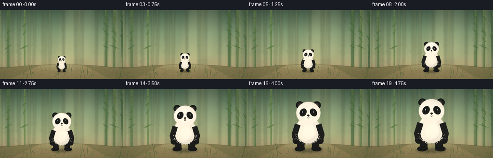
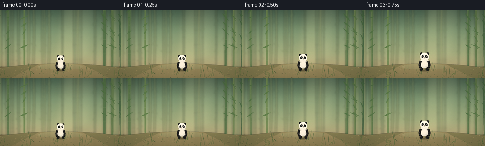
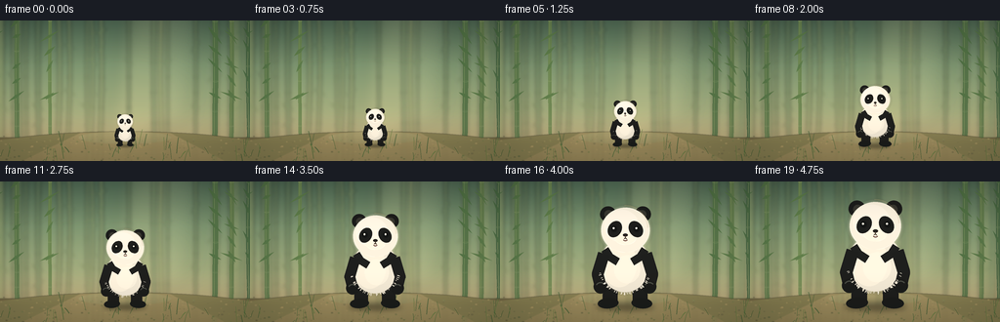
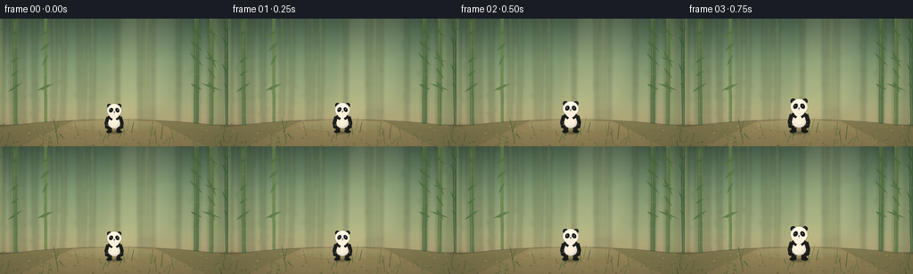
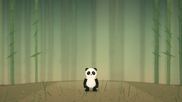
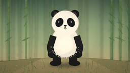
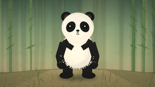

CODING AGENTS AS PIXEL WORLD MODELS
traex/DeepSeek-V4.1-Flash · instance_preservation_0045
点击播放 · 原生 RGB 像素
逐轮保存的候选
回放视频、检查图与代码变化。
每份候选均可单独播放。实际图片检查记录在下方工具轨迹中。
候选 01播放与检查图
点击播放 · 原生 RGB 像素


展开代码变化
--- 上一保存版本
+++ 本次保存版本
@@ -0,0 +1,501 @@
+from __future__ import annotations
+
+import math
+import random
+from pathlib import Path
+
+import imageio.v2 as imageio
+import numpy as np
+from PIL import Image, ImageDraw, ImageFilter
+
+import artifact_io
+
+
+ROOT = Path(__file__).resolve().parent
+WIDTH = 256
+HEIGHT = 144
+FRAMES = 20
+FPS = 4
+SS = 4 # Supersampled drawing canvas for clean downsampled edges.
+CANVAS_W = WIDTH * SS
+CANVAS_H = HEIGHT * SS
+
+
+def mix(a: tuple[int, int, int], b: tuple[int, int, int], t: float):
+ return tuple(round(a[i] * (1.0 - t) + b[i] * t) for i in range(3))
+
+
+def vertical_gradient(size, stops):
+ width, height = size
+ ys = np.linspace(0.0, 1.0, height)
+ pixels = np.empty((height, width, 3), dtype=np.float32)
+ positions = [stop[0] for stop in stops]
+ colors = np.asarray([stop[1] for stop in stops], dtype=np.float32)
+ for channel in range(3):
+ pixels[:, :, channel] = np.interp(ys, positions, colors[:, channel])[:, None]
+ return Image.fromarray(np.clip(pixels, 0, 255).astype(np.uint8), "RGB")
+
+
+def leaf_polygon(cx, cy, length, width, angle):
+ """A pointed bamboo leaf, returned as four polygon vertices."""
+ ca, sa = math.cos(angle), math.sin(angle)
+ points = [
+ (-length * 0.54, 0.0),
+ (-length * 0.06, -width * 0.55),
+ (length * 0.48, 0.0),
+ (-length * 0.06, width * 0.55),
+ ]
+ return [
+ (cx + x * ca - y * sa, cy + x * sa + y * ca)
+ for x, y in points
+ ]
+
+
+def draw_bamboo_stem(draw, x, top, bottom, width, color, highlight, rng):
+ sway = rng.uniform(-7, 7)
+ points = []
+ for i in range(12):
+ t = i / 11
+ y = top + (bottom - top) * t
+ xx = x + sway * math.sin(t * math.pi * 1.25 + rng.uniform(-0.1, 0.1))
+ points.append((xx, y))
+ poly = (
+ [(px - width / 2, py) for px, py in points]
+ + [(px + width / 2, py) for px, py in reversed(points)]
+ )
+ draw.polygon(poly, fill=color)
+ draw.line(
+ [(px - width * 0.22, py) for px, py in points],
+ fill=highlight,
+ width=max(1, int(width) // 8),
+ )
+
+ # Bamboo nodes and the pale lip around each joint.
+ joint_count = rng.randint(5, 8)
+ for j in range(joint_count):
+ t = (j + rng.uniform(0.25, 0.8)) / joint_count
+ idx = min(10, int(t * 11))
+ px, py = points[idx]
+ draw.line((px - width * 0.56, py, px + width * 0.56, py), fill=mix(color, (222, 214, 164), 0.22), width=max(1, width // 12))
+ draw.arc(
+ (px - width * 0.55, py - width * 0.22, px + width * 0.55, py + width * 0.24),
+ 8,
+ 172,
+ fill=mix(color, (225, 224, 179), 0.28),
+ width=max(1, width // 13),
+ )
+ return points
+
+
+def make_background():
+ rng = random.Random(82417)
+ bg = vertical_gradient(
+ (CANVAS_W, CANVAS_H),
+ [
+ (0.00, (73, 101, 81)),
+ (0.32, (120, 147, 112)),
+ (0.64, (156, 170, 125)),
+ (0.82, (174, 166, 122)),
+ (1.00, (113, 111, 78)),
+ ],
+ )
+
+ # Soft pools of light behind the clearing.
+ light = Image.new("RGBA", (CANVAS_W, CANVAS_H), (0, 0, 0, 0))
+ ld = ImageDraw.Draw(light)
+ ld.polygon(
+ [
+ (520, -40), (760, -40), (630, 500), (440, 500)
+ ],
+ fill=(255, 237, 174, 32),
+ )
+ ld.polygon(
+ [
+ (700, -20), (820, -20), (760, 430), (650, 430)
+ ],
+ fill=(255, 245, 195, 24),
+ )
+ light = light.filter(ImageFilter.GaussianBlur(35))
+ bg = Image.alpha_composite(bg.convert("RGBA"), light)
+
+ # Far bamboo is low contrast and softly out of focus.
+ far = Image.new("RGBA", (CANVAS_W, CANVAS_H), (0, 0, 0, 0))
+ fd = ImageDraw.Draw(far)
+ for _ in range(25):
+ x = rng.uniform(-40, CANVAS_W + 40)
+ width = rng.uniform(7, 18)
+ color = mix((92, 121, 86), (155, 164, 107), rng.random())
+ points = draw_bamboo_stem(fd, x, -80, CANVAS_H + 30, width, (*color, 100), (*mix(color, (230, 230, 170), 0.2), 90), rng)
+ for _leaf in range(5):
+ px, py = rng.choice(points)
+ angle = rng.choice([-1, 1]) * rng.uniform(0.35, 1.2)
+ fd.polygon(leaf_polygon(px, py, rng.uniform(28, 65), rng.uniform(5, 10), angle), fill=(*mix(color, (86, 124, 73), 0.35), 90))
+ far = far.filter(ImageFilter.GaussianBlur(7))
+ bg = Image.alpha_composite(bg, far)
+
+ # Midground stems frame the panda without crossing its face.
+ mid = Image.new("RGBA", (CANVAS_W, CANVAS_H), (0, 0, 0, 0))
+ md = ImageDraw.Draw(mid)
+ stem_specs = [
+ (-28, 23, (72, 103, 67)),
+ (70, 18, (86, 117, 72)),
+ (206, 13, (100, 129, 76)),
+ (880, 21, (76, 109, 67)),
+ (948, 17, (91, 119, 72)),
+ (1025, 24, (64, 96, 63)),
+ ]
+ for x, width, color in stem_specs:
+ points = draw_bamboo_stem(
+ md,
+ x,
+ -60,
+ CANVAS_H + 40,
+ width,
+ (*color, 225),
+ (*mix(color, (220, 224, 150), 0.26), 210),
+ rng,
+ )
+ for _leaf in range(7):
+ px, py = rng.choice(points[:7])
+ side = -1 if x < CANVAS_W / 2 else 1
+ angle = side * rng.uniform(0.35, 1.15)
+ md.polygon(
+ leaf_polygon(px, py, rng.uniform(40, 95), rng.uniform(7, 15), angle),
+ fill=(*mix(color, (66, 106, 58), 0.45), 225),
+ )
+ bg = Image.alpha_composite(bg, mid)
+
+ # Forest floor: warm leaf litter, a mossy clearing, and a soft path.
+ floor = Image.new("RGBA", (CANVAS_W, CANVAS_H), (0, 0, 0, 0))
+ fld = ImageDraw.Draw(floor)
+ floor_y = 480
+ fld.rectangle((0, floor_y, CANVAS_W, CANVAS_H), fill=(111, 103, 67, 255))
+ fld.ellipse((-180, 455, CANVAS_W + 180, CANVAS_H + 100), fill=(125, 121, 78, 255))
+ fld.polygon(
+ [
+ (330, 460), (695, 460), (920, CANVAS_H), (90, CANVAS_H)
+ ],
+ fill=(145, 132, 87, 205),
+ )
+ fld.ellipse((322, 455, 700, 505), fill=(146, 139, 91, 140))
+ for _ in range(210):
+ x = rng.uniform(0, CANVAS_W)
+ y = rng.uniform(475, CANVAS_H)
+ radius = rng.uniform(1.0, 4.5)
+ color = rng.choice([(86, 84, 53), (150, 134, 82), (103, 111, 62), (173, 151, 92)])
+ fld.ellipse((x - radius, y - radius * 0.45, x + radius, y + radius * 0.45), fill=(*color, rng.randint(80, 160)))
+ floor = floor.filter(ImageFilter.GaussianBlur(1.4))
+ bg = Image.alpha_composite(bg, floor)
+
+ # A few crisp foreground grass blades anchor the scene.
+ fg = Image.new("RGBA", (CANVAS_W, CANVAS_H), (0, 0, 0, 0))
+ gd = ImageDraw.Draw(fg)
+ for _ in range(40):
+ x = rng.uniform(0, CANVAS_W)
+ base_y = rng.uniform(505, CANVAS_H + 12)
+ length = rng.uniform(18, 70)
+ bend = rng.uniform(-20, 20)
+ color = rng.choice([(72, 103, 57, 210), (91, 119, 62, 210), (58, 88, 50, 200)])
+ gd.line(
+ [(x, base_y), (x + bend * 0.45, base_y - length * 0.55), (x + bend, base_y - length)],
+ fill=color,
+ width=rng.choice([2, 2, 3]),
+ joint="curve",
+ )
+ bg = Image.alpha_composite(bg, fg)
+
+ # Gentle haze keeps the foreground panda visually separated.
+ haze = Image.new("RGBA", (CANVAS_W, CANVAS_H), (0, 0, 0, 0))
+ hd = ImageDraw.Draw(haze)
+ hd.rectangle((0, 360, CANVAS_W, 500), fill=(229, 223, 173, 13))
+ haze = haze.filter(ImageFilter.GaussianBlur(28))
+ bg = Image.alpha_composite(bg, haze)
+ return bg.convert("RGB")
+
+
+def ellipse_layer(size, box, fill):
+ layer = Image.new("RGBA", size, (0, 0, 0, 0))
+ ImageDraw.Draw(layer).ellipse(box, fill=fill)
+ return layer
+
+
+def draw_rotated_ellipse(image, center, radii, angle, fill, outline=None, outline_width=0):
+ rx, ry = radii
+ local_size = (max(2, int(rx * 2 + 8)), max(2, int(ry * 2 + 8)))
+ layer = Image.new("RGBA", local_size, (0, 0, 0, 0))
+ d = ImageDraw.Draw(layer)
+ d.ellipse((4, 4, local_size[0] - 5, local_size[1] - 5), fill=fill, outline=outline, width=outline_width)
+ layer = layer.rotate(angle, resample=Image.Resampling.BICUBIC, expand=True)
+ x = round(center[0] - layer.width / 2)
+ y = round(center[1] - layer.height / 2)
+ image.alpha_composite(layer, (x, y))
+
+
+def add_soft_shadow(canvas, cx, ground_y, scale, height):
+ shadow_w = height * 0.50 * (0.92 + scale * 0.22)
+ shadow_h = height * 0.07
+ layer = Image.new("RGBA", canvas.size, (0, 0, 0, 0))
+ d = ImageDraw.Draw(layer)
+ d.ellipse(
+ (cx - shadow_w / 2, ground_y - shadow_h / 2, cx + shadow_w / 2, ground_y + shadow_h / 2),
+ fill=(33, 35, 25, 112),
+ )
+ layer = layer.filter(ImageFilter.GaussianBlur(height * 0.025))
+ canvas.alpha_composite(layer)
+
+
+def draw_panda(canvas, cx, ground_y, height, phase):
+ """Draw a front-facing panda whose feet remain planted on the ground."""
+ # Proportions are normalized to the requested full standing height.
+ h = height
+ breath = 1.0 + 0.008 * math.sin(phase)
+ head_tilt = 1.2 * math.sin(phase * 0.72)
+
+ body_c = (cx, ground_y - h * 0.405)
+ body_r = (h * 0.245 * breath, h * 0.265)
+ head_c = (cx + h * 0.004, ground_y - h * 0.742)
+ head_r = (h * 0.236, h * 0.218)
+
+ # Rear feet and legs.
+ for side in (-1, 1):
+ hip_x = cx + side * h * 0.135
+ knee_x = cx + side * h * 0.145
+ foot_x = cx + side * h * 0.145
+ leg = [(hip_x, ground_y - h * 0.27), (knee_x, ground_y - h * 0.10), (foot_x, ground_y - h * 0.035)]
+ ImageDraw.Draw(canvas).line(leg, fill=(27, 29, 27, 255), width=round(h * 0.145), joint="curve")
+ draw_rotated_ellipse(
+ canvas,
+ (foot_x + side * h * 0.018, ground_y - h * 0.035),
+ (h * 0.102, h * 0.052),
+ -side * 4,
+ (24, 27, 25, 255),
+ )
+
+ # Soft fur halo keeps the silhouette from looking like flat cut paper.
+ halo = Image.new("RGBA", canvas.size, (0, 0, 0, 0))
+ hd = ImageDraw.Draw(halo)
+ hd.ellipse(
+ (body_c[0] - body_r[0] * 1.06, body_c[1] - body_r[1] * 1.04,
+ body_c[0] + body_r[0] * 1.06, body_c[1] + body_r[1] * 1.04),
+ fill=(221, 218, 197, 70),
+ )
+ hd.ellipse(
+ (head_c[0] - head_r[0] * 1.08, head_c[1] - head_r[1] * 1.08,
+ head_c[0] + head_r[0] * 1.08, head_c[1] + head_r[1] * 1.08),
+ fill=(227, 224, 204, 64),
+ )
+ halo = halo.filter(ImageFilter.GaussianBlur(max(1.0, h * 0.012)))
+ canvas.alpha_composite(halo)
+
+ # Ears behind the head.
+ for side in (-1, 1):
+ ear_c = (head_c[0] + side * head_r[0] * 0.72, head_c[1] - head_r[1] * 0.72)
+ draw_rotated_ellipse(
+ canvas,
+ ear_c,
+ (head_r[0] * 0.33, head_r[1] * 0.34),
+ -side * 22,
+ (25, 27, 25, 255),
+ )
+ draw_rotated_ellipse(
+ canvas,
+ (ear_c[0] - side * h * 0.008, ear_c[1] + h * 0.004),
+ (head_r[0] * 0.18, head_r[1] * 0.19),
+ -side * 22,
+ (52, 53, 46, 255),
+ )
+
+ # Body: ivory fur with shaded left side and a warm rim on the right.
+ draw_rotated_ellipse(canvas, body_c, body_r, 0, (229, 226, 209, 255))
+ draw_rotated_ellipse(
+ canvas,
+ (body_c[0] - body_r[0] * 0.22, body_c[1] - body_r[1] * 0.04),
+ (body_r[0] * 0.70, body_r[1] * 0.86),
+ 0,
+ (244, 240, 221, 180),
+ )
+ # Belly contour.
+ draw_rotated_ellipse(
+ canvas,
+ (body_c[0] + body_r[0] * 0.08, body_c[1] + body_r[1] * 0.16),
+ (body_r[0] * 0.53, body_r[1] * 0.52),
+ 0,
+ (251, 247, 228, 120),
+ )
+
+ # Shoulder bands and arms.
+ for side in (-1, 1):
+ shoulder = (cx + side * h * 0.205, ground_y - h * 0.515)
+ elbow = (cx + side * h * 0.265, ground_y - h * 0.315)
+ paw = (cx + side * h * 0.235, ground_y - h * 0.195)
+ arm = [shoulder, elbow, paw]
+ ImageDraw.Draw(canvas).line(arm, fill=(28, 30, 28, 255), width=round(h * 0.115), joint="curve")
+ draw_rotated_ellipse(canvas, paw, (h * 0.070, h * 0.068), side * 9, (25, 27, 25, 255))
+ # A restrained cool highlight makes the black fur readable.
+ ImageDraw.Draw(canvas).arc(
+ (paw[0] - h * 0.048, paw[1] - h * 0.044, paw[0] + h * 0.048, paw[1] + h * 0.044),
+ 205,
+ 325,
+ fill=(69, 74, 67, 190),
+ width=max(1, round(h * 0.012)),
+ )
+
+ # Head with gentle facial shaping.
+ draw_rotated_ellipse(canvas, head_c, head_r, head_tilt, (238, 235, 218, 255))
+ draw_rotated_ellipse(
+ canvas,
+ (head_c[0] - head_r[0] * 0.16, head_c[1] - head_r[1] * 0.18),
+ (head_r[0] * 0.72, head_r[1] * 0.72),
+ head_tilt,
+ (250, 247, 231, 150),
+ )
+ # Muzzle volume.
+ draw_rotated_ellipse(
+ canvas,
+ (head_c[0], head_c[1] + head_r[1] * 0.36),
+ (head_r[0] * 0.44, head_r[1] * 0.30),
+ head_tilt,
+ (245, 241, 222, 255),
+ )
+
+ # Rotated eye patches and inset eyes.
+ for side in (-1, 1):
+ patch_c = (head_c[0] + side * head_r[0] * 0.43, head_c[1] - head_r[1] * 0.04)
+ draw_rotated_ellipse(
+ canvas,
+ patch_c,
+ (head_r[0] * 0.275, head_r[1] * 0.385),
+ side * 31 + head_tilt,
+ (27, 29, 27, 255),
+ )
+ eye_c = (patch_c[0] + side * h * 0.008, patch_c[1] - h * 0.003)
+ eye_r = max(1.3, h * 0.030)
+ ImageDraw.Draw(canvas).ellipse(
+ (eye_c[0] - eye_r, eye_c[1] - eye_r, eye_c[0] + eye_r, eye_c[1] + eye_r),
+ fill=(18, 21, 20, 255),
+ )
+ glint_r = max(0.7, eye_r * 0.32)
+ ImageDraw.Draw(canvas).ellipse(
+ (eye_c[0] - eye_r * 0.45, eye_c[1] - eye_r * 0.52,
+ eye_c[0] - eye_r * 0.45 + glint_r * 2, eye_c[1] - eye_r * 0.52 + glint_r * 2),
+ fill=(247, 247, 230, 255),
+ )
+
+ # Nose, muzzle line, and small warm mouth.
+ nose_c = (head_c[0], head_c[1] + head_r[1] * 0.22)
+ draw_rotated_ellipse(
+ canvas,
+ nose_c,
+ (head_r[0] * 0.105, head_r[1] * 0.073),
+ 0,
+ (34, 32, 29, 255),
+ )
+ d = ImageDraw.Draw(canvas)
+ line_w = max(1, round(h * 0.009))
+ d.line(
+ [(nose_c[0], nose_c[1] + head_r[1] * 0.05),
+ (nose_c[0], nose_c[1] + head_r[1] * 0.13),
+ (nose_c[0] - head_r[0] * 0.055, nose_c[1] + head_r[1] * 0.17)],
+ fill=(71, 62, 52, 220),
+ width=line_w,
+ joint="curve",
+ )
+ d.line(
+ [(nose_c[0], nose_c[1] + head_r[1] * 0.13),
+ (nose_c[0] + head_r[0] * 0.055, nose_c[1] + head_r[1] * 0.17)],
+ fill=(71, 62, 52, 220),
+ width=line_w,
+ joint="curve",
+ )
+ d.arc(
+ (nose_c[0] - head_r[0] * 0.10, nose_c[1] + head_r[1] * 0.11,
+ nose_c[0] + head_r[0] * 0.10, nose_c[1] + head_r[1] * 0.27),
+ 16,
+ 164,
+ fill=(102, 73, 65, 180),
+ width=line_w,
+ )
+
+ # Short edge fur strokes add texture while remaining clean after downsampling.
+ rng = random.Random(408 + int(h))
+ edge = ImageDraw.Draw(canvas)
+ stroke_count = max(14, int(h / 12))
+ for _ in range(stroke_count):
+ theta = rng.uniform(math.pi * 0.08, math.pi * 0.92)
+ px = body_c[0] + math.cos(theta) * body_r[0] * 1.005
+ py = body_c[1] + math.sin(theta) * body_r[1] * 1.005
+ length = h * rng.uniform(0.012, 0.026)
+ edge.line(
+ (px, py, px + math.cos(theta) * length, py + math.sin(theta) * length),
+ fill=(234, 231, 214, 155),
+ width=max(1, round(h * 0.007)),
+ )
+
+
+def make_frame(background, index):
+ p = index / (FRAMES - 1)
+ # Gentle S-curve growth with a small settling beat at the end.
+ growth = 0.30 + 0.70 * (0.10 * p + 0.90 * (p * p * (3.0 - 2.0 * p)))
+ if index == FRAMES - 1:
+ growth = 1.0
+
+ canvas = background.copy().convert("RGBA")
+ cx = CANVAS_W * 0.50
+ ground_y = 514
+ height = 112 * SS * growth
+ add_soft_shadow(canvas, cx, ground_y, growth, height)
+ draw_panda(canvas, cx, ground_y, height, phase=index * 0.72)
+
+ # A faint warm rim-light pass on the right edge, strongest in the clearing.
+ rim = Image.new("RGBA", (CANVAS_W, CANVAS_H), (0, 0, 0, 0))
+ rd = ImageDraw.Draw(rim)
+ rd.arc(
+ (cx - height * 0.225, ground_y - height * 0.985,
+ cx + height * 0.225, ground_y - height * 0.535),
+ 268,
+ 358,
+ fill=(255, 225, 154, 60),
+ width=max(1, round(height * 0.010)),
+ )
+ rim = rim.filter(ImageFilter.GaussianBlur(1.2))
+ canvas.alpha_composite(rim)
+
+ # Fine organic grain prevents broad gradients from looking synthetic.
+ arr = np.asarray(canvas.convert("RGB"), dtype=np.int16)
+ rng = np.random.default_rng(7000 + index)
+ grain = rng.normal(0.0, 2.1, (CANVAS_H, CANVAS_W, 1)).astype(np.int16)
+ arr = np.clip(arr + grain, 0, 255).astype(np.uint8)
+ frame = Image.fromarray(arr, "RGB").resize((WIDTH, HEIGHT), Image.Resampling.LANCZOS)
+
+ # Keep the dark tones rich without flattening the panda's white fur.
+ pixels = np.asarray(frame, dtype=np.float32) / 255.0
+ vignette_x = np.linspace(-1.0, 1.0, WIDTH)
+ vignette_y = np.linspace(-1.0, 1.0, HEIGHT)
+ xx, yy = np.meshgrid(vignette_x, vignette_y)
+ vignette = np.clip(1.05 - 0.13 * (xx * xx * 0.65 + yy * yy), 0.84, 1.04)
+ pixels *= vignette[:, :, None]
+ # Slight warm lift in highlights, cool depth in shadows.
+ pixels[:, :, 0] = np.clip(pixels[:, :, 0] * 1.025 + 0.004, 0, 1)
+ pixels[:, :, 2] = np.clip(pixels[:, :, 2] * 0.985 + 0.002, 0, 1)
+ return np.clip(pixels * 255, 0, 255).astype(np.uint8)
+
+
+def main():
+ background = make_background()
+ frames = [make_frame(background, i) for i in range(FRAMES)]
+ artifact_io.save(frames, ROOT)
+
+ # Browser-friendly companion file for direct viewing.
+ imageio.mimsave(
+ ROOT / "video.mp4",
+ frames,
+ fps=FPS,
+ codec="libx264",
+ quality=8,
+ macro_block_size=1,
+ ffmpeg_params=["-pix_fmt", "yuv420p", "-movflags", "+faststart"],
+ )
+
+
+if __name__ == "__main__":
+ main()
候选 02播放与检查图
点击播放 · 原生 RGB 像素


展开代码变化
--- 上一保存版本
+++ 本次保存版本
@@ -323,6 +323,18 @@
(251, 247, 228, 120),
)
+ # Dark shoulder bands are a strong panda cue and separate the pale belly
+ # from the head without changing the clean front-facing silhouette.
+ d = ImageDraw.Draw(canvas)
+ band_width = max(2, round(h * 0.078))
+ for side in (-1, 1):
+ band = [
+ (cx + side * h * 0.195, ground_y - h * 0.555),
+ (cx + side * h * 0.150, ground_y - h * 0.485),
+ (cx + side * h * 0.070, ground_y - h * 0.435),
+ ]
+ d.line(band, fill=(29, 31, 29, 255), width=band_width, joint="curve")
+
# Shoulder bands and arms.
for side in (-1, 1):
shoulder = (cx + side * h * 0.205, ground_y - h * 0.515)
@@ -463,7 +475,7 @@
# Fine organic grain prevents broad gradients from looking synthetic.
arr = np.asarray(canvas.convert("RGB"), dtype=np.int16)
rng = np.random.default_rng(7000 + index)
- grain = rng.normal(0.0, 2.1, (CANVAS_H, CANVAS_W, 1)).astype(np.int16)
+ grain = rng.normal(0.0, 0.75, (CANVAS_H, CANVAS_W, 1)).astype(np.int16)
arr = np.clip(arr + grain, 0, 255).astype(np.uint8)
frame = Image.fromarray(arr, "RGB").resize((WIDTH, HEIGHT), Image.Resampling.LANCZOS)
可观测工具轨迹
实际执行的命令与返回图片。
命令 1exit 0
/bin/bash -c "sed -n '1,240p' prompt.txt"
命令 2exit 0
/bin/bash -c "sed -n '1,280p' GENERATION_RULES.md"
命令 3exit 0
/bin/bash -c 'cat task_spec.json'
命令 4exit 1
/bin/bash -c "printf 'FILES\\n'; rg --files -g '"'!*.mp4'"' -g '"'!*.mov'"' | sed -n '1,200p'; printf 'TOOLS\\n'; command -v ffmpeg; command -v blender; command -v python3; command -v node; command -v convert; command -v magick"
命令 5exit 0
/bin/bash -c "sed -n '1,260p' artifact_io.py"
命令 6exit 0
/bin/bash -c "sed -n '1,320p' player_template.html"
命令 7exit 0
/bin/bash -c "python3 - <<'PY' import importlib.util for m in ['numpy','PIL','imageio','cv2','cairo','matplotlib','scipy']: print(m, bool(importlib.util.find_spec(m))) PY"
命令 8exit 0
/bin/bash -c "python3 - <<'PY'
import importlib.util
print('imageio_ffmpeg', bool(importlib.util.find_spec('imageio_ffmpeg')))
print('av', bool(importlib.util.find_spec('av')))
PY"命令 9exit 1
/bin/bash -c 'python3 generate.py'
命令 10exit 0
/bin/bash -c 'python3 generate.py'
命令 11exit 0
/bin/bash -c "python3 - <<'PY'
from PIL import Image
import numpy as np
im=np.array(Image.open('frames/19.png'))
for y in [70,80,90,100]:
print('y',y, [(x, tuple(im[y,x])) for x in range(115,150,5)])
PY"命令 12exit 0
/bin/bash -c 'python3 generate.py'
命令 13exit 0
/bin/bash -c "python3 - <<'PY'
from pathlib import Path
from PIL import Image
import numpy as np, json
root=Path('.')
frames=sorted((root/'frames').glob('*.png'))
print('frame_count',len(frames))
shapes={Image.open(p).size for p in frames}
print('sizes',shapes)
a=np.array(Image.open(frames[0])); b=np.array(Image.open(frames[-1]))
print('dtype',a.dtype,'diff_pixels',int(np.any(a"'!=b,axis=2).sum()))
z=np.load(root/'"'pixels.npz')
print('pixels_npz',z['pixels'].shape,z['pixels'].dtype)
print('artifacts',[(p.name,p.stat().st_size) for p in [root/'pixels.npz',root/'index.html',root/'video.mp4',root/'inspection.png']])
PY"命令 14exit 0
/bin/bash -c "python3 - <<'PY'
import cv2, json
cap=cv2.VideoCapture('video.mp4')
print('opened',cap.isOpened())
print('width',int(cap.get(cv2.CAP_PROP_FRAME_WIDTH)),'height',int(cap.get(cv2.CAP_PROP_FRAME_HEIGHT)))
print('frames',int(cap.get(cv2.CAP_PROP_FRAME_COUNT)),'fps',cap.get(cv2.CAP_PROP_FPS))
print('duration',int(cap.get(cv2.CAP_PROP_FRAME_COUNT))/cap.get(cv2.CAP_PROP_FPS))
cap.release()
PY"命令 15exit 0
/bin/bash -c "python3 -m py_compile generate.py && python3 - <<'PY'
from pathlib import Path
from PIL import Image
import json, cv2
root=Path('.')
spec=json.loads((root/'task_spec.json').read_text())
frames=sorted((root/'frames').glob('*.png'))
assert len(frames)==spec['frames']
for p in frames:
with Image.open(p) as im:
assert im.size==(spec['width'],spec['height']) and im.mode=='RGB'
assert (root/'index.html').is_file() and (root/'pixels.npz').is_file() and (root/'video.mp4').is_file()
cap=cv2.VideoCapture(str(root/'video.mp4'))
assert cap.isOpened()
assert int(cap.get(cv2.CAP_PROP_FRAME_COUNT))==spec['frames']
assert abs(cap.get(cv2.CAP_PROP_FPS)-spec['fps'])<1e-6
cap.release()
print('FINAL VALIDATION OK: 20 RGB frames, 256x144, 4 fps, 5.0 seconds')
PY"视觉工具实际返回图片 1

视觉工具实际返回图片 2

视觉工具实际返回图片 3

视觉工具实际返回图片 4

视觉工具实际返回图片 5

保存候选 2 份；完成命令 15 次；可验证图片返回 5 张。原始 API 响应与完整日志保留在本地。